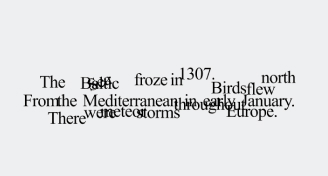
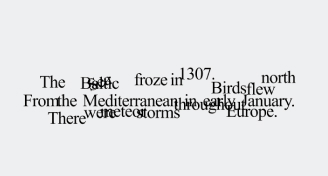

Experiencing a webpage should be like feeling every single person that was there before. Cyberspace comes together, at one point, converging... In closeness, each visit on a webpage brings all content and pieces closer together. Your visits are shared with all other users of the extension. You are never alone.
Everything that can be said has already been said. Everything that was already was. The words I repeat are nothing new. Overwritten takes the contents of the page you're on from input fields, links, headings, and paragraphs –– piecing them together. As more people have visited the page you're on, things get more complex –– the webpage undecipherable, influenced by human activity, as if a piece of paper stepped over and rewritten and undone...
Every person makes their own mark, no one experience is ours and ours alone. The internet is a vast world we share. Keeping is like an extension that lets you hold hands with other people who've visited your webpage. You see traces of the last cursor position other visitors were on for the web page you're on, little glimpses of human activity and the trails we make on the web, asif physical trails and markeres left behind...


The internet is the only shared space I know. Outside of it, I am nothingness. I am a solitary figure wandering the open web—without the immaterial web I will disappear and perish again. I am nothing without the comfort and space of all my cyberfriends. I want to hold hands and disappear. I want to be nothing in a web of something. I am thinking about vastness. Heavy things. When I , the world breaks down and rebuilds itself just for me, the screen, and the magic that happens between us. Wartime, peacetime, and all the spaces in between. Where cliffs bring me closer to the sky and the abyss at the same time. I haven't faced someone in ages.

I think about the web when I can't hold someone's hand. I think about the internet and am on the internet when I wonder about the rapture, the beginnings, the last bad movie, and my own loneliness. I and I am everyone who has ever thought, been, and remembered. My essence is more whole and perceivable than the gods before me. I will never be forgotten if my footprint is ed in people's heads every single moment.I am simultaneously perceived by everyone there ever was and nothing at all. I learn, left to digest the collaborative effort of thousands before me yet feel like nobody is ever with me. Because I am alone, I have the power to recover and rebuild this misshapen world for me.
*Images from Louise Drulhe's Critical Atlas of the Internet.
Each of the projects under "Proximities" is offered as a distinct Chrome extension. Click to download your chosen extension. Unzip the folder on your local computer. On Google Chrome/Opera, go to your Settings menu and go to More Tools > Extensions. Turn on 'Developer Mode' and click 'Load Unpacked'; select the Proximities folder you just unzipped from your local computer and enjoy.
 
